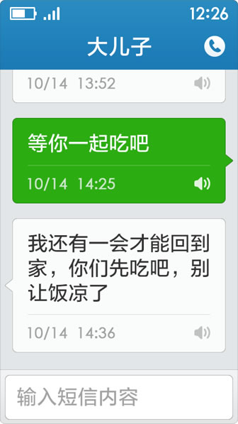

基本操作
- 点击和滑动
手指在屏幕上点击和滑动是最常用功能，可以用于运行和选择程序。 - 长按和拖动
在某种情况下，按住一些条目，会激活编辑模式或促发更多操作，还可以拖动到其他地方。
桌面

- 手指左右滑动可以浏览更多程序；
- 点击桌面上的程序，可以使之启动。
电话

- 通话记录
红色为未接电话；
点击联系人可查看该联系人信息；
点击[拨号盘]可拨打号码。

- 选择/保存联系人
在拨号界面可以选择联系人，也可保存已输入的电话号码。
短信

- 短信记录
红色为新电话；
点击可查看与该联系人的短信内容；
点击[写短信]可发短信。

- 短信对话
点击短信内容可进入大字体界面，并伴随语音播报。

- 写短信
进入短信编辑页面，选择或输入收信人号码，编辑短信内容支持手写或语音输入。
电话本

- 联系人检索
可以按姓名首字母进行联系人检索。

- 新建联系人
添加联系人姓名及电话号码。
常见问题
- 如何查看手机中安装的其他应用，并添加到桌面上？
在桌面上点击“应用列表”，可以查看手机中安装的其他应用，点击“＋”添加到桌面，点击“一”从桌面上移除。
- 如何查看系统设置？
在桌面上点击“设置”，选择系统设置。
- 桌面上的应用如何调整位置或者进行卸载？
在桌面上点击“设置”，选择“桌面管理”进入编辑模式，可以拖动应用色块进行位置调整，拖动到上方的“删除程序”可以卸载应用。
- 点击短信为什么不能进行语音播报？
在桌面上点击“设置”，将“语音播报”功能开启即可。
- 如何在桌面上添加联系人？
滑动到桌面左一界面，点击“添加”，选择联系人“添加到桌面”即可。
- 如何给联系人添加大头像？
选择联系人，点击笔形的编辑图标，可以添加头像，也可以进行信息更改。
更多内容欢迎关注以下方式：
微信公共账号：极简时代
新浪微博：@老年桌面
官方论坛：www.jeejen.com
新浪微博：@老年桌面
官方论坛：www.jeejen.com